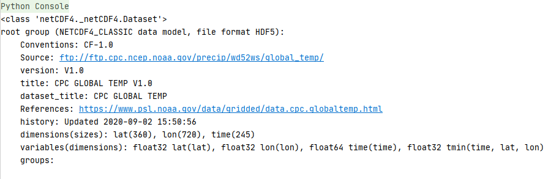
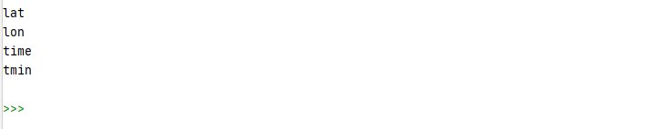
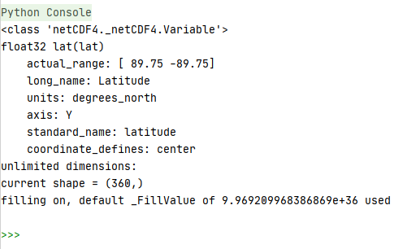
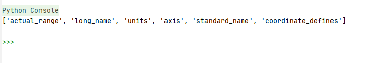
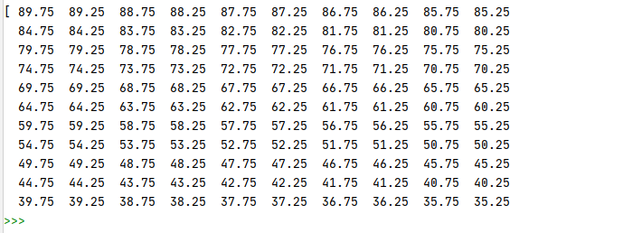

NetCDF全称为network Common Data Format，中文译法为“网络通用数据格式”。
netcdf文件开始的目的是用于存储气象科学中的数据，现在已经成为许多数据采集软件的生成文件的格式。
函数的自变量x,y,z等在netcdf中叫做维(dimension) 或坐标轴(axix)，
函数值value在netcdf中叫做变量(Variables).
自变量和函数值在物理学上的一些性质，在netcdf中就叫属性(Attributes).
读取nc文件：
from netCDF4 import Dataset
file_path='E:\\nc_file\\2\\tmin.2020.nc'
dst = Dataset(file_path)
print(dst)
程序显示:

查看nc文件中的变量：
for i in dst.variables.keys():
print(i)
程序显示:

查看每个变量的信息：
print(dst.variables['lat'])
程序显示:

查看每个变量的属性：
print(dst.variables['lat'].ncattrs())
程序显示:

读取数值：
print(dst.variables['lat'][:])
程序显示:

全部CODE：
from netCDF4 import Dataset
file_path='E:\\nc_file\\2\\tmin.2020.nc'
#读取nc文件
dst = Dataset(file_path)
#查看nc文件中的变量
for i in dst.variables.keys():
print(i)
#查看每个变量的信息
print(dst.variables['lat'])
print(dst.variables['lon'])
print(dst.variables['time'])
#查看每个变量的属性
print(dst.variables['lat'].ncattrs())
print(dst.variables['lon'].ncattrs())
print(dst.variables['time'].ncattrs())
#读取数值
print(dst.variables['lat'][:])
print(dst.variables['lon'][:])
print(dst.variables['time'][:])
#转csv文件
lat = dst.variables['lat'][:]
df = pd.DataFrame(lat)
df.to_csv('D:\\pre.csv', sep=',')